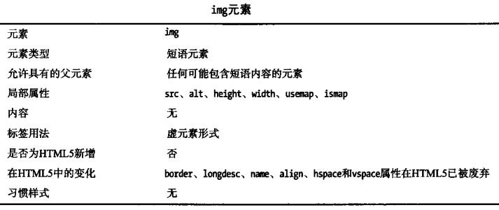
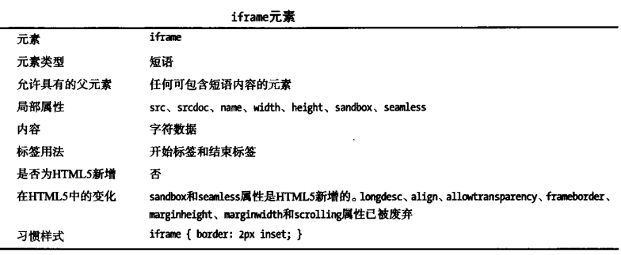
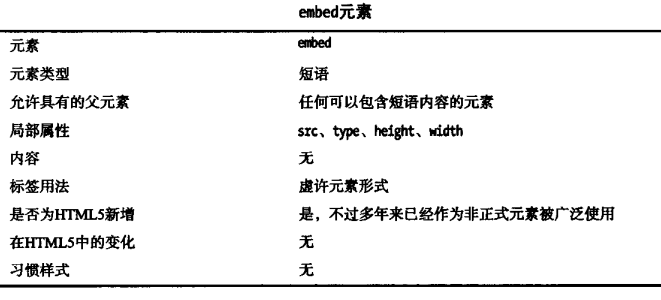
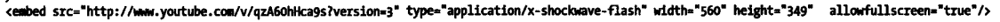
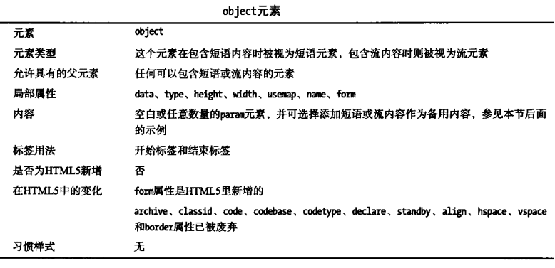
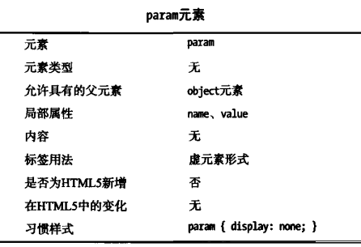
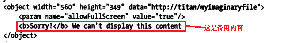
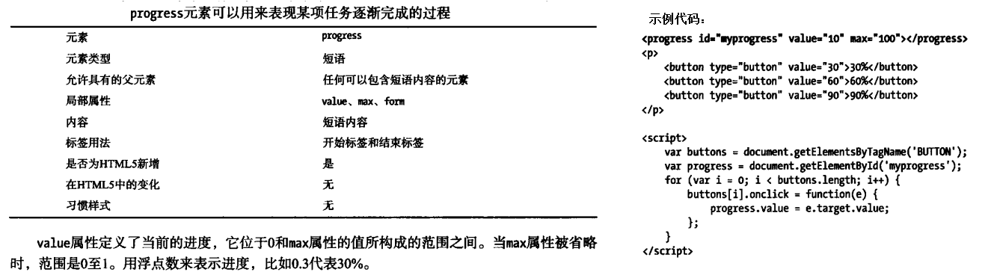
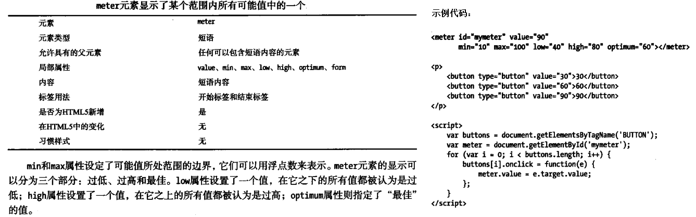

丰富HTML页面
1、嵌入图像
使用img元素在HTML文档中嵌入图像,alt属性定义备用内容，此内容在图像无法呈现时显示。图像会在HTML标记处理完毕后才会加载，如果省略width和height属性，浏览器就不知道为图像预留多少空间，从而造成页面晃动。width和height如果只设置其中一个，另一个会按图像本身比例等比拉伸，如果同时设置，可能导致图像比例不协调。结合a标签可以设计出基于图像的超链接。

设计分区响应图：
涉及元素：map、area（略）
2、嵌入另一张HTML文档
使用iframe元素

3、通过插件嵌入内容
使用embed和object元素

src属性指定内容地址，type属性指定内容的MIME类型，还可以加个allowfullscreen="true"启用全屏观看功能。
示例：

data属性提供内容地址，object元素需要配合param元素使用，param元素定义将要传递给插件的参数。name和value属性定义参数的name和value值。

object元素还可在结束标签之前插入备用显示内容，当指定内容无法显示时显示备用内容。
示例：
当type属性不存在时，浏览器尝试从数据本身判断类型。对于某些浏览器，即使插件内容不存在也会加载插件，显示一片空白区域而不是备用内容。
4、object元素的用途用途
4.1、嵌入图像<object data="test.png" type="image/png"></object>
4.2、创建分区响应图（浏览器支持性差，略）
4.3、创建浏览器上下文（类似iframe），type设置为text/html，浏览器不普遍支持
5、嵌入数字表现形式
5.1、显示进度

5.2、显示范围值

6、嵌入音频、视频、图形
audio、video、source、track、canvas详见后文。